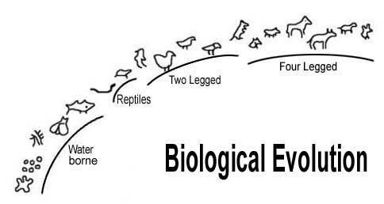

In the process of creating plants and animals, Almighty God said, "Let there be..." as a blessing and permission to move forward. This signifies that He embedded the process of biological evolution from the beginning. The angels were monitoring, and He simply observed the final state of each phase, became pleased, and gave His permission to proceed. However, in the case of humans, Almighty God said, "And now We will make human beings..." rather than "Let there be..."
গাছপালা এবং প্রাণী তৈরির প্রক্রিয়ায়, সর্বশক্তিমান ঈশ্বর বলেছিলেন, "সেখানে থাকুক..." আশীর্বাদ এবং এগিয়ে যাওয়ার অনুমতি হিসাবে। এটি নির্দেশ করে যে তিনি শুরু থেকেই জৈবিক বিবর্তনের প্রক্রিয়াকে এম্বেড করেছেন। ফেরেশতারা পর্যবেক্ষণ করছিলেন, এবং তিনি কেবল প্রতিটি পর্যায়ের চূড়ান্ত অবস্থা পর্যবেক্ষণ করেছিলেন, খুশি হয়েছিলেন এবং এগিয়ে যাওয়ার অনুমতি দিয়েছিলেন। যাইহোক, মানুষের ক্ষেত্রে, সর্বশক্তিমান ঈশ্বর বলেছেন, "এবং এখন আমরা মানুষ বানাবো..." পরিবর্তে "যেখানে থাকতে দাও..."
4. The creation of Animals on Earth- the Quran
4. পৃথিবীতে প্রাণীর সৃষ্টি- কুরআন
The Quran provides insight into the evolution of life on Earth, dividing the progression based on locomotion. This means that it addresses the evolution of animals. ―All animals are motile, meaning they can move spontaneously and independently at some points of their lives‖ – Wikipedia, the Free Encyclopedia However, at lower levels, it is difficult to differentiate between plants and animals. Movement is a primary characteristic of animals, but many lower animals resemble plants in their simplicity of structure and growth. Colonies of compound hydroids and coral- making polyps are plant-like and lack the power of locomotion, yet they are classified as animals. The following verse describes the creation of animals, which aligns with the evolutionary progression discovered by scientists.
কুরআন পৃথিবীতে জীবনের বিবর্তনের অন্তর্দৃষ্টি প্রদান করে, গতির উপর ভিত্তি করে অগ্রগতি বিভক্ত করে। এর মানে হল এটি প্রাণীদের বিবর্তনকে সম্বোধন করে। “সমস্ত প্রাণীই গতিশীল, যার অর্থ তারা তাদের জীবনের কিছু সময়ে স্বতঃস্ফূর্তভাবে এবং স্বাধীনভাবে চলতে পারে” – উইকিপিডিয়া, দ্য ফ্রি এনসাইক্লোপিডিয়া যাইহোক, নিম্ন স্তরে, উদ্ভিদ এবং প্রাণীর মধ্যে পার্থক্য করা কঠিন। নড়াচড়া প্রাণীদের একটি প্রাথমিক বৈশিষ্ট্য, তবে অনেক নিম্ন প্রাণী তাদের গঠন এবং বৃদ্ধির সরলতায় উদ্ভিদের অনুরূপ। যৌগিক হাইড্রয়েড এবং প্রবাল-নির্মাণ পলিপের উপনিবেশগুলি উদ্ভিদের মতো এবং গতিশক্তির অভাব রয়েছে, তবুও তারা প্রাণী হিসাবে শ্রেণীবদ্ধ করা হয়। নিম্নলিখিত শ্লোকটি প্রাণীদের সৃষ্টির বর্ণনা দেয়, যা বিজ্ঞানীদের দ্বারা আবিষ্কৃত বিবর্তনীয় অগ্রগতির সাথে সামঞ্জস্যপূর্ণ।
"And Allah has created every animal from water: Of them there are some that creep on their bellies, some that walk on two legs, and some that walk on four. Allah creates what He wills; for verily Allah has power over all things" [Al Quran 25:25]
"এবং আল্লাহ প্রত্যেক প্রাণীকে পানি থেকে সৃষ্টি করেছেন: তাদের মধ্যে কিছু আছে যারা তাদের পেটে হামাগুড়ি দেয়, কেউ দুই পায়ে হাঁটে এবং কেউ চার পায়ে চলে। আল্লাহ যা ইচ্ছা সৃষ্টি করেন; কেননা আল্লাহ সব কিছুর উপর ক্ষমতাবান" [আল কোরান 25:25]
The following table, taken from The New Encyclopedia Britannica, shows the similarities.
দ্য নিউ এনসাইক্লোপিডিয়া ব্রিটানিকা থেকে নেওয়া নিম্নলিখিত টেবিলটি মিল দেখায়।
Scientific Progression The Quran‘s [25:25] Era System Progression Age of Era based on Locomotion Precambrian Old single-cell and …Allah has 4500–3300 multi-cell creatures. created every Million (Marine Creatures) animal from Years water… Paleozoic Fishes, …Of them there 600–280 Amphibians, are some that Million Reptiles. creep on their Years (Creep on bellies) bellies… Mesozoic Dinosaurs, Flying …Some that 230–135 Reptiles, Birds. walks on two Million (Two Legged legs... Years Creatures) Cenozoic Mammals …And some that 63–13 (Four Legged walk on four… Million Creatures) Years
বৈজ্ঞানিক অগ্রগতি কুরআনের [25:25] যুগের সিস্টেমের অগ্রগতি যুগের প্রগতি যুগের লোকোমোশন প্রিক্যামব্রিয়ান পুরাতন একক-কোষ এবং …আল্লাহর 4500-3300টি বহু-কোষ প্রাণী রয়েছে। বছরের জল থেকে প্রতিটি মিলিয়ন (সামুদ্রিক প্রাণী) প্রাণী তৈরি করেছে... প্যালিওজোয়িক মাছ, ...তাদের মধ্যে 600-280টি উভচর, কিছু মিলিয়ন সরীসৃপ। তাদের বছরগুলিতে হামাগুড়ি দেয় (পেটের উপর হামাগুড়ি দেয়) পেট… মেসোজোয়িক ডাইনোসর, উড়ন্ত … কিছু যে 230-135 সরীসৃপ, পাখি। দুই মিলিয়নে হাঁটে (দুই পায়ের পায়ে... বছরের প্রাণী) সেনোজোয়িক স্তন্যপায়ী প্রাণী … এবং কিছু যে 63-13 (চার পায়ে হাঁটে... মিলিয়ন প্রাণী) বছর
Figure 41.7 is taken from The New Encyclopedia Britannica. I have underlined waterborne creatures, reptiles (creeping creatures), two-legged creatures (birds), and four-legged creatures (mammals) to correlate them with verse 25:25. I have excluded humans from the figure, as the link is absent.
চিত্র 41.7 দ্য নিউ এনসাইক্লোপিডিয়া ব্রিটানিকা থেকে নেওয়া হয়েছে। আমি জলবাহিত প্রাণী, সরীসৃপ (লতানো প্রাণী), দুই পায়ের প্রাণী (পাখি), এবং চার পায়ের প্রাণী (স্তন্যপায়ী) শ্লোক 25:25 এর সাথে সম্পর্কযুক্ত করার জন্য আন্ডারলাইন করেছি। আমি চিত্র থেকে মানুষকে বাদ দিয়েছি, কারণ লিঙ্কটি অনুপস্থিত।
FIGURE 41.8: Biological Evolution Thus, the Quran presents a similar idea about the evolution of animals. The Quran presents a different idea only concerning humans. Cave paintings and the fossil record indicate that Adam and Eve (the so-called modern humans) appeared on Earth around ten to twelve thousand years ago. While scientists have discovered older fossils resembling human bones, these actually belong to different species of monkeys and apes. Humans cannot be placed within the chain of biological evolution—the missing link is clear. I have deliberately discussed biological evolution and the creation of humans in Section 12 of Chapter 24.

চিত্র 41_8 / Figure 41_8
চিত্র 41.8: জৈবিক বিবর্তন সুতরাং, কোরান প্রাণীদের বিবর্তন সম্পর্কে একই ধারণা উপস্থাপন করে। কুরআন কেবলমাত্র মানুষের বিষয়ে একটি ভিন্ন ধারণা উপস্থাপন করে। গুহা চিত্র এবং জীবাশ্ম রেকর্ড নির্দেশ করে যে আদম এবং ইভ (তথাকথিত আধুনিক মানুষ) প্রায় দশ থেকে বারো হাজার বছর আগে পৃথিবীতে আবির্ভূত হয়েছিল। যদিও বিজ্ঞানীরা মানুষের হাড়ের মতো পুরানো জীবাশ্ম আবিষ্কার করেছেন, এগুলি আসলে বিভিন্ন প্রজাতির বানর এবং বনমানুষের অন্তর্গত। মানুষকে জৈবিক বিবর্তনের শৃঙ্খলের মধ্যে রাখা যায় না - অনুপস্থিত লিঙ্কটি পরিষ্কার। আমি 24 অধ্যায়ের 12 অনুচ্ছেদে ইচ্ছাকৃতভাবে জৈবিক বিবর্তন এবং মানুষের সৃষ্টি নিয়ে আলোচনা করেছি।
চিত্র 41_8 / Figure 41_8
5. Creation of Earth - the Quran
5. পৃথিবীর সৃষ্টি - কুরআন
The Six-Day Model in the Quran differs from the scientific model in some respects. However, the Quran is correct, as the differences of science stem from the lack of information. This is discussed below:
কুরআনের ছয় দিনের মডেল কিছু ক্ষেত্রে বৈজ্ঞানিক মডেল থেকে আলাদা। যাইহোক, কুরআন সঠিক, কারণ বিজ্ঞানের পার্থক্য তথ্যের অভাব থেকে উদ্ভূত হয়। এটি নীচে আলোচনা করা হল:
5a. Length of a Day
5 ক. একটি দিনের দৈর্ঘ্য
In the Quran, a day may mean a period of time. A day may be as long as one thousand earthly years:
কুরআনে একটি দিনের অর্থ একটি সময়কাল হতে পারে। একটি দিন এক হাজার পার্থিব বছরের মতো দীর্ঘ হতে পারে:
―...Verily a day in the sight of thy Lord is like a thousand years of your reckoning.‖ [Al Quran 22: 47] ―He rules affairs from the Skies to the Lands; in the end will go up to Him in a Day—measure a thousand years of your reckoning.‖ [Al Quran 32: 5]
"...নিশ্চয়ই তোমার পালনকর্তার কাছে একটি দিন তোমার হিসাব-নিকাশের হাজার বছরের সমান।" শেষ পর্যন্ত একদিনে তাঁর কাছে যাবে - আপনার হিসাব এক হাজার বছরের পরিমাপ করুন।'' [আল কুরআন 32:5]
A day may be as long as fifty thousand earthly years:
একটি দিন পঞ্চাশ হাজার পার্থিব বছরের মতো দীর্ঘ হতে পারে:
―A questioner asked about a penalty to befall, the Unbelievers, the which there is none to ward off from Allah, Lord of the Ways of Ascent: The angels and the ruhs ascend unto Him in a Day. The measure whereof is fifty thousand years‖ [Al Quran 70: 1–4]
- একজন প্রশ্নকর্তা কাফেরদের শাস্তি সম্পর্কে জিজ্ঞাসা করলেন, যাকে আল্লাহর কাছ থেকে রক্ষা করার মতো কেউ নেই, চড়ার পথের মালিক: ফেরেশতারা এবং রুহগণ একদিনে তাঁর কাছে আরোহণ করে। যার পরিমাপ পঞ্চাশ হাজার বছর” [আল কুরআন ৭০:১-৪]
Thus, the length of a day varies in the reckoning of Allah. A 'day' of the Six Days may be as short as an earthly hour or as long as a billion earthly years.
এভাবে আল্লাহর হিসাব অনুযায়ী দিনের দৈর্ঘ্য পরিবর্তিত হয়। ছয় দিনের একটি 'দিন' পার্থিব ঘন্টার মতো ছোট বা এক বিলিয়ন পার্থিব বছরের মতো দীর্ঘ হতে পারে।
5b. The Verses Narrating Eight (8) Days
5 খ. আট (8) দিন বর্ণনাকারী আয়াত
People in ancient times believed that no matter which direction they traveled, they would eventually reach the ocean. As a result, they developed the idea that the land floated on water. However, since a piece of earth cannot float on water, they imagined that the land rested on the back of a giant turtle. The Holy Bible described the creation of the sky, which dispelled the Turtle Theory. The new concept was that water existed above a 'massive land.' God created a blue dome that separated the water from a part of the land. The protected land became the Earth, and the dome became the Sky. In this widely accepted and circulated idea, it was believed that the land was created before the sky. The Quran did not directly counter this belief, as doing so would have placed Prophet Muhammad (pbuh) in the undesirable position of making people adopt a new idea. The following verses were revealed in response to a question from a Jew. In these verses, creation is described in a sequence that would have made sense to an ordinary person of ancient times. However, it remains true by employing a technique, which will be discussed subsequently:
প্রাচীনকালের লোকেরা বিশ্বাস করত যে তারা যে দিকেই যাত্রা করুক না কেন, তারা শেষ পর্যন্ত সমুদ্রে পৌঁছাবে। ফলস্বরূপ, তারা ধারণা তৈরি করেছিল যে জমি জলের উপর ভাসমান। যাইহোক, যেহেতু পৃথিবীর এক টুকরো জলের উপর ভাসতে পারে না, তাই তারা কল্পনা করেছিল যে জমিটি একটি বিশালাকার কচ্ছপের পিঠে বিশ্রাম নিয়েছে। পবিত্র বাইবেল আকাশের সৃষ্টির বর্ণনা দিয়েছে, যা কচ্ছপ তত্ত্বকে উড়িয়ে দিয়েছে। নতুন ধারণাটি ছিল যে জল একটি 'বিশাল জমির উপরে' বিদ্যমান। ঈশ্বর একটি নীল গম্বুজ তৈরি করেছিলেন যা জমির একটি অংশ থেকে জলকে আলাদা করেছিল। সুরক্ষিত ভূমি হয়ে গেল পৃথিবী, আর গম্বুজ হয়ে গেল আকাশ। এই ব্যাপকভাবে গৃহীত এবং প্রচারিত ধারণায়, এটি বিশ্বাস করা হয়েছিল যে আকাশের আগে জমি তৈরি হয়েছিল। কুরআন সরাসরি এই বিশ্বাসের বিরুদ্ধে দাঁড়ায়নি, কারণ এটি করার ফলে নবী মুহাম্মদ (সাঃ) মানুষকে একটি নতুন ধারণা গ্রহণ করার জন্য অবাঞ্ছিত অবস্থানে রাখত। নিচের আয়াতগুলো একজন ইহুদীর প্রশ্নের জবাবে অবতীর্ণ হয়। এই আয়াতগুলিতে, সৃষ্টিকে এমন একটি ক্রমানুসারে বর্ণনা করা হয়েছে যা প্রাচীন যুগের একজন সাধারণ মানুষের কাছে বোধগম্য হত। যাইহোক, এটি একটি কৌশল ব্যবহার করে সত্য থেকে যায়, যা পরবর্তীতে আলোচনা করা হবে:
―Say: Is it that ye deny Him Who created the land in Two Days? And do ye join equals with Him? He is the Lord of the universes. And He placed therein firmly set mountains, and parked therein from above it, and determined therein its sustenance in Four Days equal—for those who ask. Moreover, He established Himself into the Sky while it had been smoke. He said to it and to the lands, ―Come ye together willingly or unwillingly‖. They said, ―We do come in willing obedience‖. So, He completed them as Seven Skies in Two Days, and He assigned to each Sky its duty and command. And We adorned the lowest Sky with lights and protection. Such is the Decree of the Exalted in Might, Full of Knowledge.‖ [Al Quran 41:9-12] One may add up the number of Days in the above verses; it will be 8 Days, not 6 Days:
বলুন, তোমরা কি তাকে অস্বীকার করছ যিনি দুই দিনে জমি সৃষ্টি করেছেন? আর তোমরা কি তাঁর সাথে শরীক হবে? তিনি বিশ্বজগতের পালনকর্তা। অতঃপর তিনি তাতে স্থাপন করেছেন পর্বতমালা, এবং তাতে তার উপর থেকে স্থাপন করেছেন এবং সেখানে চার দিনের সমান রিযিক নির্ধারণ করেছেন- যারা প্রার্থনা করে। তদুপরি, তিনি নিজেকে আকাশে প্রতিষ্ঠিত করেছিলেন যখন এটি ছিল ধোঁয়ায়। তিনি এটিকে এবং দেশগুলিকে বলেছিলেন, "তোমরা স্বেচ্ছায় বা অনিচ্ছায় একত্র হও"। তারা বলেছিল, "আমরা স্বেচ্ছায় আনুগত্যে এসেছি"। অতঃপর, তিনি সেগুলোকে দুই দিনে সাত আসমান হিসেবে পূর্ণ করলেন এবং প্রতিটি আকাশের জন্য তার দায়িত্ব ও নির্দেশ অর্পণ করলেন। আর আমি সর্বনিম্ন আকাশকে আলো ও সুরক্ষা দিয়ে সুশোভিত করেছি। এটি পরাক্রমশালী, জ্ঞানে পরিপূর্ণ মহানের আদেশ।'' [আল কুরআন 41:9-12] উপরের আয়াতগুলিতে কেউ দিনের সংখ্যা যোগ করতে পারে; এটি 8 দিন হবে, 6 দিন নয়:
2 days of the 1st paragraph: The land (dust and asteroid) was created. 4 days of the 2nd paragraph: Sustenance was parked from above. Total: 6 days 2 days of the 3rd paragraph: These were the days of the preceding cycle when the universe was filled with smoke. The universe contracted, produced heavier elements at least up to silicon, and then restarted with a Big Bounce. Grand Total: 8 days
1ম অনুচ্ছেদের 2 দিন: ভূমি (ধুলো এবং গ্রহাণু) তৈরি করা হয়েছিল। 2য় অনুচ্ছেদের 4 দিন: ভরণপোষণ উপরে থেকে পার্ক করা হয়েছিল। মোট: 6 দিন 3য় অনুচ্ছেদের 2 দিন: এইগুলি ছিল পূর্ববর্তী চক্রের দিন যখন মহাবিশ্ব ধোঁয়ায় পূর্ণ ছিল। মহাবিশ্ব সংকুচিত হয়েছে, কমপক্ষে সিলিকন পর্যন্ত ভারী উপাদান তৈরি করেছে এবং তারপর একটি বিগ বাউন্সের সাথে পুনরায় চালু হয়েছে। গ্র্যান্ড মোট: 8 দিন
6. Two Days of the 3rd paragraph: ―…Moreover, He established Himself into the Sky while it had been smoke. He said to it and to the lands, ―Come ye together willingly or unwillingly‖. They said, ―We do come in willing obedience‖. So, He completed them as Seven Skies in Two Days, and He assigned to each Sky its duty and command. [Al Quran 41:9-12] In these verses, the narration of the last two days begins with the word 'Moreover.' These were days of the preceding cycle of the universe. In this cycle, the Big Bang produced smoke (primarily hydrogen and helium). The universe contracted, and elements at least up to silicon were created, allowing for the formation of land (dust and asteroids). The contracting universe collapsed into a fireball and restarted through a Big Bounce, giving rise to the seven- sky universe of the present cycle. Thus, the initial universe of the present cycle could have contained land (dust and asteroids). But scientists calculate that the universe was created 13.6 billion years ago, and the Earth was created 4.6 billion years ago. This contradicts the Quran, which states that the Earth (lands) existed in the initial universe. I have discussed below that the model of the Quran is more rational than the model of science. The Big Bang produced the simplest form of matter, hydrogen, created from one proton and one electron. Later, 25% of this matter transformed into helium: ―One can calculate that in the hot Big Bang model about a quarter of the protons and neutrons would have converted into helium nuclei, along with a small amount of heavy hydrogen and other elements.‖ – A Brief History of Time by Stephen Hawking. Scientists calculate that in the first 15 minutes, elements heavier than helium could have been produced, but they would not have survived due to the extreme temperature of the early universe. After the first 15 minutes of the Big Bang, the universe was no longer hot enough to produce new elements. Therefore, they predict that the heavier elements found on Earth were created in first-generation stars. The large and hot first-generation stars had sufficient pressure and temperature in their cores to produce heavier elements rapidly. These stars then exploded, scattering the elements into space, where they contributed to the formation of long-lasting second-generation stars and planets. ―It is during supernova explosion that the creation of the more complicated elements like uranium is thought to occur. These, together with the other elements built up from hydrogen over the life of the star, are flung out into space in a vast expanding cloud of gas. The space between the stars is replenished with gas but not the original hydrogen and helium which collapsed to form the star. Instead it is full of oxygen, hydrogen, copper, manganese, bromine, titanium, gold, silver and all the other elements which make up our world on Earth. These elements went into the mixture from which the Sun and the Solar system were later formed…Massive stars are thus the crucibles in which the bulk of the elements with which we are familiar are created. Without these massive stars the universe would simply be a mixture of hydrogen and helium, created during the early stages of the universe before stars or galaxies had formed at all. It is sobering to realize that almost all the elements, which make up our familiar world of water, air, earth and living tissue were formed in the deep interior of distant stars. You and I, and this book you are reading, and the ink it is printed with, once went though the raging furnace in the center of a star.‖ – The Life and Death of Stars by Geoffray Bath in The Encyclopedia of Space Travel and Astronomy edited by John Man. The concentration of hydrogen and helium into the first-generation stars, their evolution, supernova explosions, and the subsequent concentration of gases and heavier elements into long-lasting second-generation stars and planets took a long time. Ultimately, the Earth formed about 4.6 billion years ago. However, the Quran suggests that the initial universe contained land (Earth). This could be possible if the universe began with a Big Bounce, where the elements necessary to form land were created in the preceding cycle. The verse in the third paragraph implies that the universe is indeed cyclic and was created in the preceding cycle, possibly through a Big Bang. The Big Bang produced smoke, primarily composed of hydrogen and helium. The universe contracted until elements, at least up to silicon, were produced, possibly in large, hot stars. Eventually, the universe of the preceding cycle collapsed into a fireball and was revived through a Big Bounce, being redesigned as the seven-sky universe of the present cycle (the Seven-Sky-Universe is deliberately discussed in Section-7 of Chapter-2). Thus, in the initial universe of the present cycle, there was dust and asteroids, which could have formed the primitive Earth (land). The following verses also support this idea:
6. 3য় অনুচ্ছেদের দুই দিন: - … তাছাড়া, তিনি নিজেকে আকাশে প্রতিষ্ঠিত করেছিলেন যখন এটি ধোঁয়া ছিল। তিনি এটিকে এবং দেশগুলিকে বলেছিলেন, "তোমরা স্বেচ্ছায় বা অনিচ্ছায় একত্র হও"। তারা বলেছিল, "আমরা স্বেচ্ছায় আনুগত্যে এসেছি"। অতঃপর, তিনি সেগুলোকে দুই দিনে সাত আসমান হিসেবে পূর্ণ করলেন এবং প্রতিটি আকাশের জন্য তার দায়িত্ব ও নির্দেশ অর্পণ করলেন। [আল কুরআন 41:9-12] এই আয়াতগুলিতে, শেষ দুই দিনের বর্ণনা 'আরওভার' শব্দ দিয়ে শুরু হয়েছে। এগুলি ছিল মহাবিশ্বের পূর্ববর্তী চক্রের দিন। এই চক্রে, বিগ ব্যাং ধোঁয়া তৈরি করেছিল (প্রাথমিকভাবে হাইড্রোজেন এবং হিলিয়াম)। মহাবিশ্ব সংকুচিত হয়েছে, এবং অন্তত সিলিকন পর্যন্ত উপাদানগুলি তৈরি হয়েছিল, যা ভূমি (ধুলো এবং গ্রহাণু) গঠনের অনুমতি দেয়। সংকোচনকারী মহাবিশ্ব একটি আগুনের গোলাতে ভেঙে পড়ে এবং একটি বিগ বাউন্সের মাধ্যমে পুনরায় শুরু হয়, যা বর্তমান চক্রের সাত-আকাশ মহাবিশ্বের জন্ম দেয়। সুতরাং, বর্তমান চক্রের প্রাথমিক মহাবিশ্বে ভূমি (ধুলো এবং গ্রহাণু) থাকতে পারে। কিন্তু বিজ্ঞানীরা গণনা করেছেন যে মহাবিশ্ব 13.6 বিলিয়ন বছর আগে তৈরি হয়েছিল এবং পৃথিবী 4.6 বিলিয়ন বছর আগে তৈরি হয়েছিল। এটি কুরআনের বিরোধিতা করে, যা বলে যে পৃথিবী (ভূমি) প্রাথমিক মহাবিশ্বে বিদ্যমান ছিল। আমি নীচে আলোচনা করেছি যে বিজ্ঞানের মডেলের চেয়ে কুরআনের মডেলটি বেশি যুক্তিযুক্ত। বিগ ব্যাং একটি প্রোটন এবং একটি ইলেক্ট্রন থেকে সৃষ্ট পদার্থের সবচেয়ে সহজ রূপ, হাইড্রোজেন তৈরি করেছিল। পরবর্তীতে, এই বিষয়টির 25% হিলিয়ামে রূপান্তরিত হয়: "কেউ গণনা করতে পারে যে গরম বিগ ব্যাং মডেলে প্রোটন এবং নিউট্রনের প্রায় এক চতুর্থাংশ হিলিয়াম নিউক্লিয়াসে রূপান্তরিত হবে, সাথে অল্প পরিমাণে ভারী হাইড্রোজেন এবং অন্যান্য উপাদান। বিজ্ঞানীরা গণনা করেছেন যে প্রথম 15 মিনিটে, হিলিয়ামের চেয়ে ভারী উপাদানগুলি উত্পাদিত হতে পারত, তবে প্রাথমিক মহাবিশ্বের চরম তাপমাত্রার কারণে তারা বেঁচে থাকত না। বিগ ব্যাং এর প্রথম 15 মিনিটের পরে, মহাবিশ্ব আর নতুন উপাদান তৈরি করার জন্য যথেষ্ট গরম ছিল না। অতএব, তারা ভবিষ্যদ্বাণী করে যে পৃথিবীতে পাওয়া ভারী উপাদানগুলি প্রথম প্রজন্মের নক্ষত্রগুলিতে তৈরি হয়েছিল। বৃহৎ এবং উত্তপ্ত প্রথম প্রজন্মের নক্ষত্রগুলির কোরে যথেষ্ট চাপ এবং তাপমাত্রা ছিল যাতে তারা দ্রুত ভারী উপাদান তৈরি করে। এই নক্ষত্রগুলি তখন বিস্ফোরিত হয়, উপাদানগুলিকে মহাকাশে ছড়িয়ে দেয়, যেখানে তারা দীর্ঘস্থায়ী দ্বিতীয় প্রজন্মের তারা এবং গ্রহগুলির গঠনে অবদান রাখে। - সুপারনোভা বিস্ফোরণের সময় ইউরেনিয়ামের মতো আরও জটিল উপাদানের সৃষ্টি হয় বলে মনে করা হয়। এগুলি, নক্ষত্রের জীবনের উপর হাইড্রোজেন থেকে নির্মিত অন্যান্য উপাদানগুলির সাথে, গ্যাসের বিশাল প্রসারিত মেঘে মহাকাশে ছড়িয়ে পড়ে। নক্ষত্রের মধ্যবর্তী স্থানটি গ্যাস দ্বারা পূর্ণ হয় তবে মূল হাইড্রোজেন এবং হিলিয়াম নয় যা তারাটি গঠনের জন্য ভেঙে পড়ে। পরিবর্তে এটি অক্সিজেন, হাইড্রোজেন, তামা, ম্যাঙ্গানিজ, ব্রোমিন, টাইটানিয়াম, সোনা, রূপা এবং অন্যান্য সমস্ত উপাদানে পূর্ণ যা পৃথিবীতে আমাদের পৃথিবী তৈরি করে। এই উপাদানগুলি সেই মিশ্রণে চলে গিয়েছিল যেখান থেকে সূর্য এবং সৌরজগৎ পরবর্তীতে গঠিত হয়েছিল...এইভাবে বিশাল নক্ষত্রগুলি হল ক্রুসিবল যেখানে আমরা পরিচিত উপাদানগুলির বেশিরভাগই তৈরি হয়। এই বিশাল নক্ষত্রগুলি ছাড়া মহাবিশ্ব কেবল হাইড্রোজেন এবং হিলিয়ামের মিশ্রণ হবে, যা মহাবিশ্বের প্রাথমিক পর্যায়ে তারা বা ছায়াপথ তৈরি হওয়ার আগে তৈরি হয়েছিল। এটা অনুধাবন করা খুবই দুঃখজনক যে প্রায় সমস্ত উপাদান, যা আমাদের পরিচিত জল, বায়ু, পৃথিবী এবং জীবন্ত টিস্যু তৈরি করে দূরের তারার গভীর অভ্যন্তরে গঠিত হয়েছিল। আপনি এবং আমি, এবং আপনি যে বইটি পড়ছেন, এবং এটি যে কালি দিয়ে ছাপা হয়েছে তা একবার একটি নক্ষত্রের কেন্দ্রস্থলে জ্বলন্ত চুল্লিতে চলে গেছে।'' - জন ম্যান দ্বারা সম্পাদিত দ্য এনসাইক্লোপিডিয়া অফ স্পেস ট্রাভেল অ্যান্ড অ্যাস্ট্রোনমি-তে জিওফ্রে বাথের দ্য লাইফ অ্যান্ড ডেথ অফ স্টারস। প্রথম প্রজন্মের নক্ষত্রগুলিতে হাইড্রোজেন এবং হিলিয়ামের ঘনত্ব, তাদের বিবর্তন, সুপারনোভা বিস্ফোরণ এবং পরবর্তীকালে দীর্ঘস্থায়ী দ্বিতীয় প্রজন্মের তারা এবং গ্রহগুলিতে গ্যাস এবং ভারী উপাদানগুলির ঘনত্ব দীর্ঘ সময় নেয়। শেষ পর্যন্ত, পৃথিবী প্রায় 4.6 বিলিয়ন বছর আগে গঠিত হয়েছিল। যাইহোক, কুরআন পরামর্শ দেয় যে প্রাথমিক মহাবিশ্বে ভূমি (পৃথিবী) রয়েছে। এটি সম্ভব হতে পারে যদি মহাবিশ্ব একটি বিগ বাউন্স দিয়ে শুরু হয়, যেখানে ভূমি গঠনের জন্য প্রয়োজনীয় উপাদানগুলি পূর্ববর্তী চক্রে তৈরি হয়েছিল। তৃতীয় অনুচ্ছেদের শ্লোকটি বোঝায় যে মহাবিশ্ব প্রকৃতপক্ষে চক্রাকার এবং পূর্ববর্তী চক্রে সৃষ্টি হয়েছে, সম্ভবত একটি বিগ ব্যাং এর মাধ্যমে। বিগ ব্যাং ধোঁয়া উৎপন্ন করেছিল, যা প্রাথমিকভাবে হাইড্রোজেন এবং হিলিয়াম দ্বারা গঠিত। মহাবিশ্ব সংকুচিত হয় যতক্ষণ না উপাদানগুলি, অন্তত সিলিকন পর্যন্ত, উত্পাদিত হয়, সম্ভবত বড়, উত্তপ্ত তারাগুলিতে। অবশেষে, পূর্ববর্তী চক্রের মহাবিশ্ব একটি আগুনের গোলাতে ভেঙে পড়ে এবং একটি বিগ বাউন্সের মাধ্যমে পুনরুজ্জীবিত হয়েছিল, বর্তমান চক্রের সাত-আকাশের মহাবিশ্ব হিসাবে পুনরায় ডিজাইন করা হয়েছে (সেভেন-স্কাই-ইউনিভার্সটি ইচ্ছাকৃতভাবে অধ্যায়-2-এর বিভাগ-7-এ আলোচনা করা হয়েছে)। সুতরাং, বর্তমান চক্রের প্রাথমিক মহাবিশ্বে, ধূলিকণা এবং গ্রহাণু ছিল, যা আদিম পৃথিবী (ভূমি) গঠন করতে পারে। নিম্নলিখিত আয়াতগুলিও এই ধারণাটিকে সমর্থন করে:
―Do not the unbelievers see that the Skies and the Lands (dusts and asteroids) were joined together before We clove them asunder…‖ [Al Quran 21:30]
"কাফেররা কি দেখে না যে, আকাশ ও ভূমি (ধূলিকণা ও গ্রহাণু) একত্রিত হয়ে গেছে, পূর্বেই আমরা তাদের বিচ্ছিন্ন করি..." [আল কুরআন 21:30]
According to the above verse, there were lands (dust and asteroids) in the initial universe of the present cycle. In this scenario, there would be no need for first- generation stars to produce the heavier elements. The heavier elements, at least up to silicon, could have been produced during the contracting phase of the preceding cycle. The Holy Bible also supports this idea:
উপরের আয়াত অনুসারে বর্তমান চক্রের প্রাথমিক মহাবিশ্বে ভূমি (ধুলো এবং গ্রহাণু) ছিল। এই পরিস্থিতিতে, ভারী উপাদানগুলি তৈরি করার জন্য প্রথম প্রজন্মের তারকাদের প্রয়োজন হবে না। ভারী উপাদান, অন্তত সিলিকন পর্যন্ত, পূর্ববর্তী চক্রের চুক্তির পর্যায়ে উত্পাদিত হতে পারে। পবিত্র বাইবেলও এই ধারণাটিকে সমর্থন করে:
―…I alone stretched out the Skies, when I made the Earth; no one helped Me‖ – Isaiah 44:24, Holy Bible (GNB)
-...আমি একা আকাশ বিস্তৃত করেছি, যখন আমি পৃথিবী তৈরি করেছি; কেউ আমাকে সাহায্য করেনি” – ইশাইয়া 44:24, পবিত্র বাইবেল (GNB)
A portion of the dust and asteroids formed the Solar System within the Milky Way galaxy. To understand the formation of the Earth according to the Quran, we can analyze the Six Days in two parts: Two Days and Four Days.
ধূলিকণা এবং গ্রহাণুর একটি অংশ মিল্কিওয়ে গ্যালাক্সির মধ্যে সৌরজগত তৈরি করেছে। কুরআন অনুযায়ী পৃথিবীর গঠন বোঝার জন্য, আমরা ছয় দিনকে দুটি ভাগে বিশ্লেষণ করতে পারি: দুই দিন এবং চার দিন।